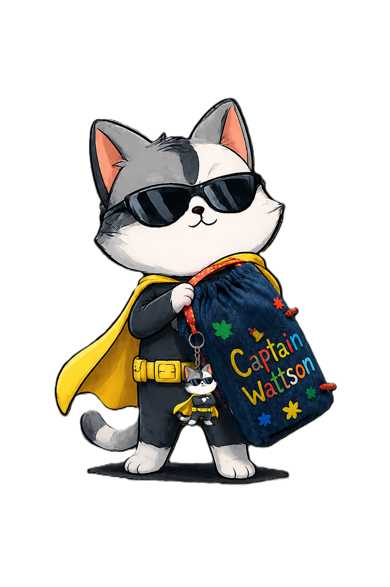
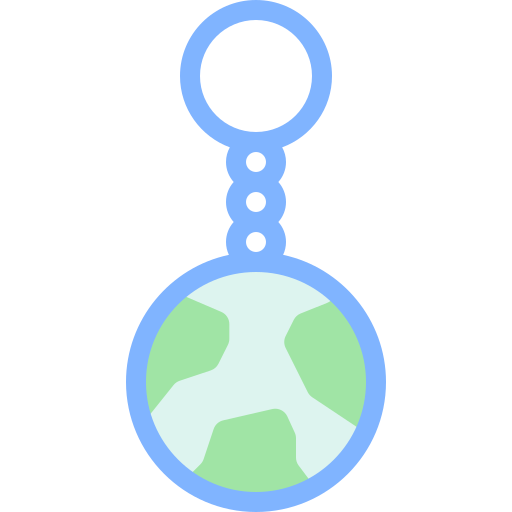
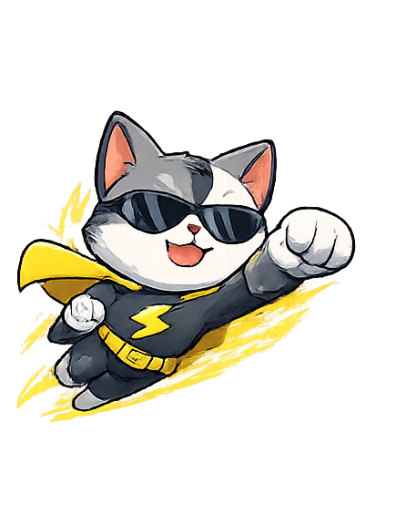

Clip it on before school so the energy-saving reminder comes along with you.
A small 3D mascot you can carry around as a cute reminder to save energy and look after the climate.
What really it is
Our artefact is a 3D keychain of our mascot Captain Wattson. It is something people of all ages and backgrounds can use as a cool little accessory.
The keychain can hang on your everyday items, showing off an adorable cat while also reminding you and the people around you that being climate-conscious and energy-efficient matters.

How it connects to our PSA
Our PSA is about making energy-saving feel like a normal part of life, not some big boring rule. The keychain does that in a simple way: you see Captain Wattson, and it gives you a quick nudge to switch things off, waste less power, and keep climate-friendly habits in mind.
Use cases
Feel free to use and put our keychain anywhere! However, we suggest putting it on your school bag, lunch bag, keys, lanyard, or even keeping it at home as a personal reminder to keep climate- and energy-conscious values in mind.

Clip it on before school so the energy-saving reminder comes along with you.
Clip it onto a lunch bag for a small reminder during the day.
Keep Captain Wattson on your keys so the message is always close by.
Easy to wear, easy to notice, and simple for other people to ask about.

Leave it somewhere visible as a personal reminder to keep climate and energy-conscious values in mind.